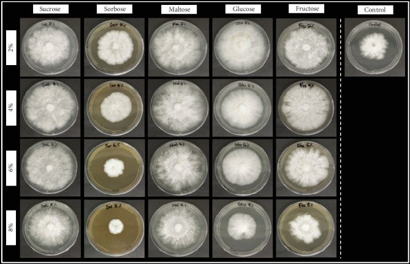
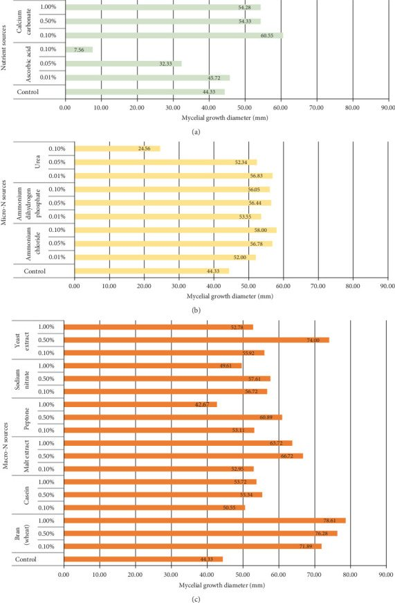
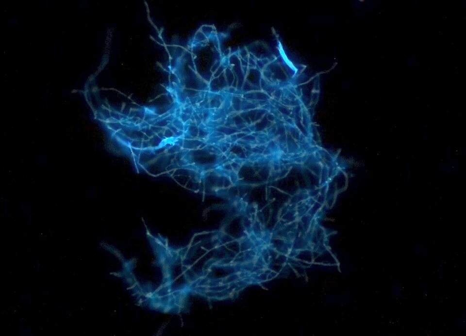

Observer
Comprendre les organismes, les interactions et les conditions qui font émerger une fonction biologique.
Trois directions, un même contenu. Ce document est un banc d'essai visuel isolé. Il ne modifie pas la vitrine publique. Compare la personnalité, la lisibilité, la crédibilité scientifique et la façon dont chaque direction pourrait porter les outils et les recherches BA Labs.
Un laboratoire de recherche indépendant raconté comme une revue éditoriale. Le graphite cadre la matière vivante; le cuivre donne un accent, pas une décoration.
Explorer le vivant, concevoir des procédés accessibles et transformer les connaissances biologiques en solutions concrètes.

Comprendre les organismes, les interactions et les conditions qui font émerger une fonction biologique.
Développer des procédés reproductibles avec une ingénierie adaptée aux ressources disponibles.
Relier les essais de laboratoire aux besoins agricoles, environnementaux et industriels.
Une revue de biologie de terrain : papier minéral, encre, vert botanique et photographies réelles. L'Algérie et le laboratoire sont visibles dans le récit.
Un laboratoire indépendant qui relie microbiologie, mycologie et ingénierie frugale pour développer des solutions utiles au terrain.

Des organismes, des substrats et des milieux étudiés dans leurs conditions réelles.
Des essais documentés, des paramètres suivis et des méthodes améliorées par itération.
Une recherche appliquée, expliquée sans exagération et reliée à des usages concrets.
Une interface de recherche appliquée, structurée comme un atlas technique. Le système graphique sert la compréhension et la donnée plutôt que l'ambiance.
Applied research and frugal engineering for biological systems, cultivation processes and environmental applications.

Characterize living systems, process parameters and biological interactions.
Translate observations into protocols, instruments and controlled processes.
Connect laboratory development with agriculture and environmental needs.